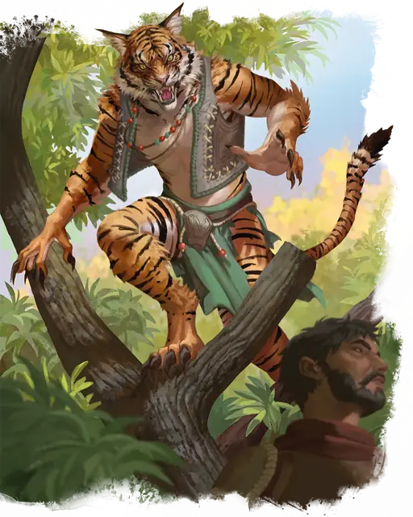

Вертигр
Weretiger
Среднее или Маленькое Чудовище (Ликантроп), Нейтральное

Класс Защиты 12 Инициатива +2 (12)
Хиты 120 (16к8 + 48)
Скорость 30 футов, Плавания 40 футов (только в форме тигра)
| мод | спас | ||
|---|---|---|---|
| СИЛ | 17 | +3 | +3 |
| ЛОВ | 15 | +2 | +2 |
| ТЕЛ | 16 | +3 | +3 |
| мод | спас | ||
|---|---|---|---|
| ИНТ | 10 | +0 | +0 |
| МДР | 13 | +1 | +1 |
| ХАР | 11 | +0 | +0 |
Чувства Тёмное зрение 60 футов, пассивное Восприятие 15
Языки Общий (не может говорить в форме тигра)
Опасность 4 (1 100 опыта; БВ +2)
Действия
Мультиатака. Вертигр совершает две атаки Царапаньем или Длинным луком в любой комбинации. Он может заменить одну из этих атак на атаку Укусом.
Укус (только в форме тигра или в гибридной форме). Бросок рукопашной атаки: +5, досягаемость 5 фт. Попадание: 12 (2к8 + 3) Колющего урона. Если цель — Гуманоид, она подвергается воздействию следующего эффекта: Спасбросок Телосложения: Сл 13. Провал: Цель проклята. Когда Хиты проклятой цели опускаются до 0, она становится Вертигром под управлением Мастера и получает 10 Хитов. Успех: Цель получает иммунитет к проклятью этого вертигра на 24 часа.
Царапание. Бросок рукопашной атаки: +5, досягаемость 5 фт. Попадание: 10 (2к6 + 3) Рубящего урона.
Длинный лук (только в гуманоидной или гибридной форме).. Бросок дальнобойной атаки: +4, дистанция 150/600 фт. Попадание: 11 (2к8 + 2) Колющего урона.
Бонусные действия
Рыск (только в форме тигра или в гибридной форме). Вертигр перемещается на расстояние вплоть до значения своей Скорости, не Провоцируя атаки. В конце этого перемещения вертигр может совершить действие Затаивание.
Перевоплощение. Вертигр либо перевоплощается в гибрид тигра и гуманоида Большого размера или тигра Большого размера, либо возвращается в истинную форму гуманоида. Его статистика, кроме размера, не меняется в зависимости от формы. Любое снаряжение, которое он носит или несёт, не трансформируется.
Бонус мастерства +2
Среда обитания Леса, Луга, Пустыня
Сокровища Оружейные
Вертигр
Преображённый силой тигра
Вертигры способны принять облик тигра или гибрида гуманоида и тигра. Хотя они могут перевоплощаться по собственной воле или когда того требует их магическая природа, многие вертигры — ночные охотники, принимающие звериную форму после захода солнца.
Некоторые превращения связаны с лунным циклом, сменой времён года или знаменательными событиями. Как правило, вертигры считают свой дар благословением или семейным наследием и используют его, чтобы защищать что-то исторически значимое. Совершите бросок по таблице «Сокровище вертигра» для вдохновения или выберите сами, что защищает вертигр.
Сокровище вертигра
| 1к4 | Тигр-оборотень охраняет... |
| 1 | Легендарное оружие или символ власти. |
| 2 | Место испытания будущих героев. |
| 3 | Редкий вид волшебного растения или животного. |
| 4 | Священный источник с волшебной водой. |